7 Synchronisation de données
La synchronisation de données dans le cadre de la collecte de données mobile est l’opération consistant à envoyer les données collectées des smartphones vers un serveur, le plus souvent en ligne. Pour cela, il faut dont qu’il y ait d’un côté un serveur pour héberger les formulaires vièrges que les enquêteurs pourront télécharger et les données que ces agents porront collecter. De l’autre côté, il faut paramétrer les téléphones pour que ceux-ci communiquent avec ce serveur.
Nous verrons donc comment mettre en place un serveur et comment paramétrer les appareils mobiles android.
7.1 Serveurs
Un serveur peut se définir comme étant un espace (en ligne) de stockage de données de différents types.
L’hébergement des données de ODK collect peut se faire avec les serveurs comme ODK Central, ODK aggregate, KoboToolBox et autres. Dans cette formation, nous verrons comment utiliser les serveurs KoboToolBox et ODK aggregate.
7.1.1 KoboToolBox
Le serveur de KoboToolBox est initialement utilisé pour gérer les données collectées avec l’application Kobo Collect. Mais étant donné que Kobo Collect est basée sur le code source de ODK Collect et que les deux applications utilisent le standared XLSForm, nous pouvons donc utiliser KoboToolBox pour héberger les données collectées avec ODK collect.
7.1.1.1 Créer un compte dans KoboToolBox
La création d’un serveur dans KoboToolBox consiste à créer un compte et à y importer des formulaires. Cela se fait sur https://kobo.humanitarianresponse.info/. comme le montre la figure suivante :
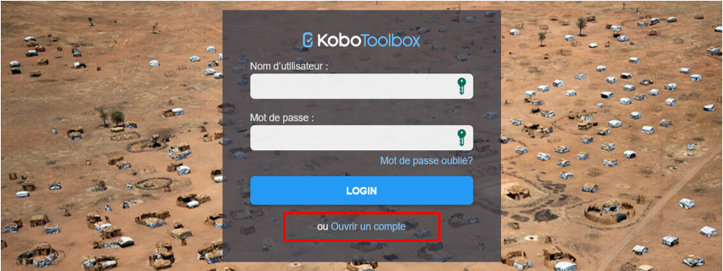
7.1.1.2 Importer un formulaire
Une fois dans l’interface utilisateur de KoboToolbox, vous pouvez importer votre formulaire XLSForm dans le serveur.
Pour cela, il suffit de cliquer sur le bouton “Nouveau” se trouvant au coin supérieur gauche comme le montre la figure suivante :
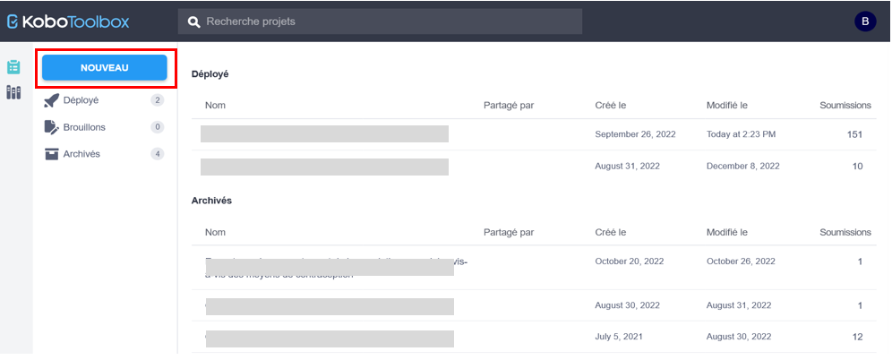
Cela affiche la boîte de dialogue “Créer le projet: Choose a source”.
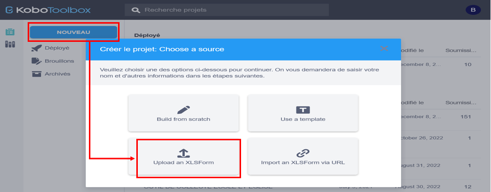
cliquez sur “Upload an XLSForm” pour aller chercher le fichier XLSFom qui se trouve sur votre ordinateur.
sélectionnez le fichier, cliquer sur OK pour l’importer
Dans la boîte de dialogue “Créer le projet: Détails du projet”, précisez le titre du projet, une description(facultative), votre secteur et votre pays.
- cliquer sur le bouton “CREER LE PROJET”
VOTRE PROJET EST MAINTENANT DANS LE SERVEUR!
7.1.1.3 Déployer un formulaire
Il ne suffit pas d’importer un projet dans le serveur pour qu’il soit utilisable pour la collecte de données. Jusque là, notre formulaire est dans le serveur mais nous ne pouvons pas l’utiliser pour la collecte de données car il n’est pas encore déployé.
Pour déployer un fomulaire, il suffit de cliquer sur le bouton “DEPLOYER” comme le montre la figure suivante :
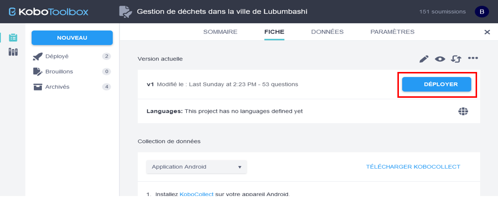
Dans la partie “Collection de données”, nous avons différentes options en cliquant sur le ménu déroulant. Une explication pour chaque option est donnée ci-après :
Online-Offline (soumissions multiples) : Ceci permet des soumissions en ligne et hors ligne et constitue la meilleure option pour collecter des données sur le terrain.
En ligne seulement (soumissions multiples) : C’est la meilleure option lorsque vous entrez plusieurs enregistrements à la fois sur un ordinateur, par exemple, pour la transcription des dossiers papier.
En ligne seulement (une soumission) : Il permet une soumission unique et peut être associé au paramètre « return_url » pour rediriger l’utilisateur vers une URL de votre choix après la soumission du formulaire.
En ligne uniquement (une soumission autorisée par répondant) : Ceci permet à votre formulaire Web d’être soumis une seule fois par utilisateur, en utilisant une protection de base pour empêcher le même utilisateur (sur le même navigateur et appareil) de soumettre plus d’une fois.
Code de formulaire Web : Utilisez cet extrait de code html5 pour intégrer votre formulaire sur votre propre site web en utilisant des marges plus petites.
Aperçu seulement : Utilisez cette version pour tester et obtenir un retour d’information. Ne permet pas de soumettre des données.
Application Android : permet de collecter les données avec des smartphones Android
7.1.1.4 Gestion de données
Ici, nous voyons quelques fénêtres qui permet d’avoir une idée sur votre collecte d données sur le terrain. Il s’agira de voir comment afficher le tableau de données, le rapport de données, les différents médias, la distribution spatiale des enquêtes sur la carte et le téléchaement des données.
A. Afficher le tableau de données
Pour afficher les données collectées dans un tableau où les lignes représentent les individus (enquêtes réalisées) et les colonnes les variables, procédez comme suit :
Cliquez sur “DONNEES” dans la barre supérieure,
Dans le panneau gauche, cliquez sur “Tableau”
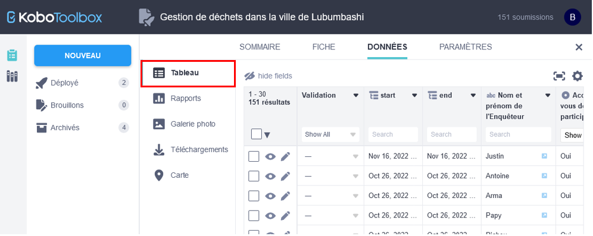
Ici, il est possible de masquer des champs, filtrer, trier, figer, modifier ou supprimer les données.
Pour modifier ou supprmer une donnée, il suffit de la sélectionner en cochant la case de la ligne correspondante et cliquez sur “Modifier” ou “Supprimer” qui s’affiche au dessus du tableau de données.
L’opération de suppression de données est irrevestible. Cela veut dire que les données supprimées ne peuvent plus être récupérées.
B. Afficher le rapport de données
Par défaut, KoboToolBox crée un rapport automatique sur les données collectées. Sous forme graphique et tabulaire, les données de chaque variable sont affichées. Ce rapport peut être personnalisé en modifiant le type du graphique, la variable de groupement et les couleurs. Il est aussi possible d’imprimer ce rapport.
A partir de la fénêtre de données, cliquez sur “Rapports”.
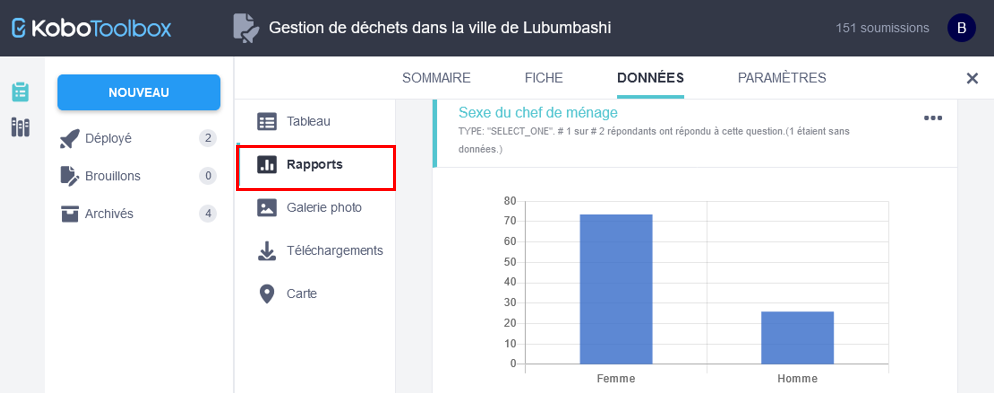
C. Accéder aux médias
Lorsque vous collectez des données multimédias telles que des photos, des signatures ou des vidéos, vous pouvez retrouver tous ces fichiers en clanquant sur “Galerie photo” dans le panneau gauche comme sur la figure suivante :
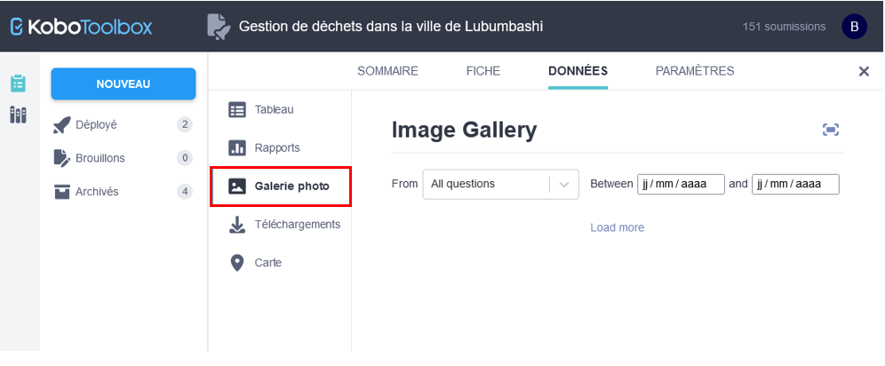
D. Afficher les données sur la carte
Lorsque le formulaire de collecte de données inclue la collecte de données géographiques, KoboToolBox crée par défaut une carte intéractive permettant de visualiser les unités enquêtées.
On peut accéder à la carte en cliquant sur “Carte” à partir du panneau gauche comme sur la figure suivante :
Quelques boutons sur la carte permettent de modifier l’affichage des points sur la carte.
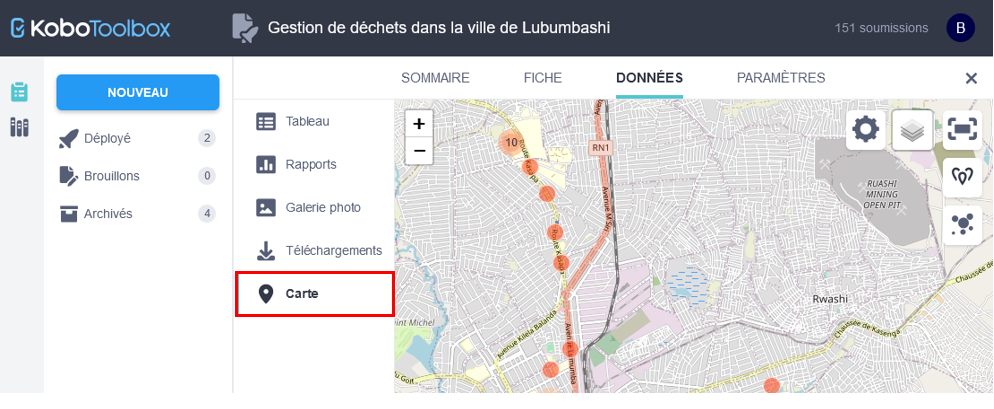
E. Exporter les données
KoboToolBox permet d’exporter les données vers divers formats tels que SPSS, Excel et CSV.
L’exportation de données se fait comme suit :
Après avoir cliqué sur “Téléchargements” dans le panneau gauche,
sélectionnez le format de sortie sous “Sélectionner le type d’exportation”
sélection le format de valeur et entête.
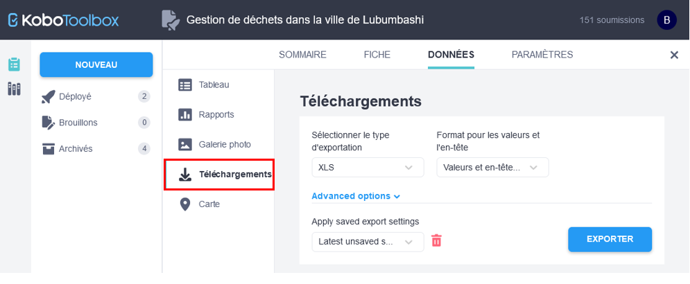
Avec Etiquettes, vous exportez les labels. Les entêtes de colonnes seront les différentes questions et les valeurs proviendront de la colonne label.
Avec Valeurs et entête XML, les names. Les entêtes de colonnes seront les noms de variables (name) et les valeurs proviendront de la colonne name de la feuille choices.
Une fois ces options précisées, cliquez sur “EXPORTER”. Cela active un bouton pour le téléchargement des données.
Cliquez enfin sur télécharger.
Vous pouvez aussi exporter les fichiers multimédias en sélectionnant “Fichier média (ZIP)” sous “Sélectionner le type d’exportation”.
7.1.2 ODK Aggregate
En cours d’écriture…
7.2 Paramétrage du téléphone
Dans cette partie, nous allons voir comment paramétrer le téléphone pour qu’il se connecte au serveur. Cela pour :
télécharger le formulaire vièrge logé adns le serveur,
envoyer les données collectées sur terrain au serveur.
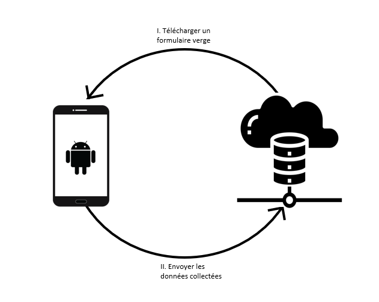
7.2.1 Lien avec le serveur
Pour toutes données collectées avec KoboToolBox, le lien du serveur est le même. Seul le nom d’utilisateur et le mot de passe diffèrent.
Pour établir le line entre le téléphone et le serveur,
Si c’est la première fois que vous utilisez ODK Collect, vous aurez un écran semblable à celui de la figure suivante :
cliquez sur “Saisir les détails du projet”
saisissez le lien du serveur comme suit : https://kc.humanitarianresponse.info/nom_utilisateur. Prière de remplacer “nom_utilisateur” par votre nom d’utilisateur du compte KoboToolBox.
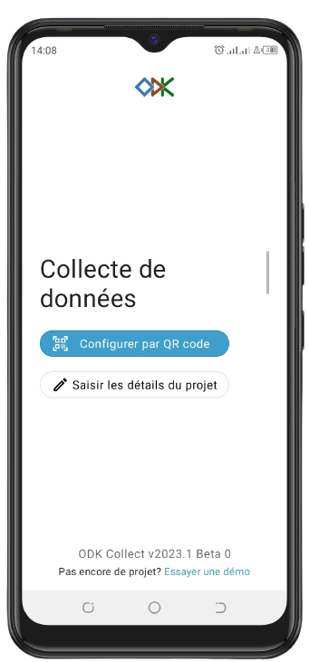
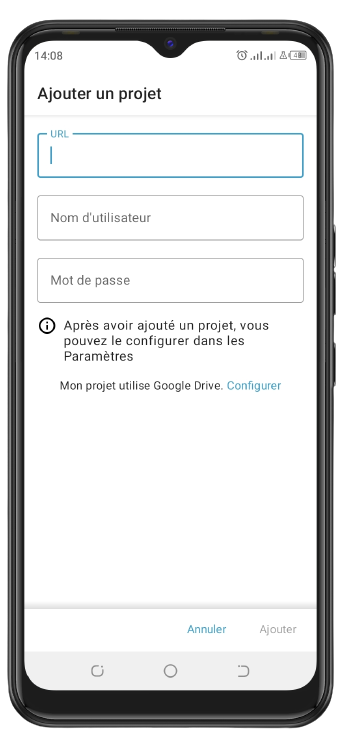
paramétrage du téléphone
- cliquez sur “Apliquer”
Si ODK collect contient déjà d’autres projets,
cliquez sur l’icone bleu au coin supérieur droit à partir de l’écran d’accueil de ODK Collect,
cliquez sur paramètres dans le menu contextuel
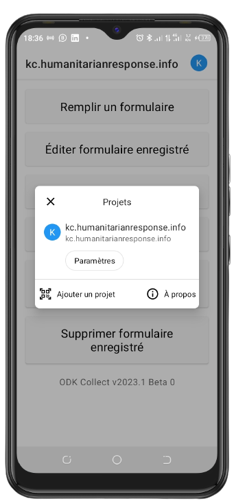
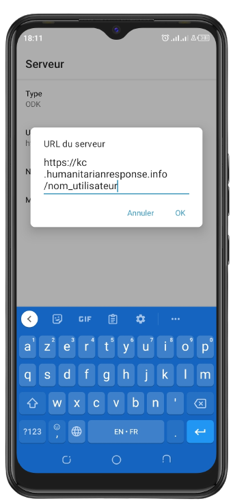
paramétrage du téléphone
sur la liste des options, cliquez sur “Serveur”
cliquez sur URL et tapez : https://kc.humanitarianresponse.info/nom_utilisateur. Prière de remplacer “nom_utilisateur” par votre nom d’utilisateur du compte KoboToolBox.
cliquez sur “OK”.
7.2.2 Télécharger un formulaire vièrge
A partir du menu principal,
cliquer sur “Télécharger un formulaire vierge”
une fois les formulaires affichés, sélectionnez celui que vous voulez et cliquez sur “Télécharger la sélection”.
7.2.3 Remplir un formulaire vièrge
A partir du menu principal,
cliquez sur “Remplir un formulaire”
cliquez sur le formulaire à partir de la liste affichée
7.2.4 Editer un formulaire
A partir du menu principal,
cliquez sur “Editer un formulaire”
A partir de la liste de tous les formulaires enregistrés, sélectionnez un puis éditez. Enregistrez à la fin pour sauvegarder les modifications.
7.2.5 Envoyer les données au serveur
A partir du menu principal,
cliquez sur “Envoyer un formulaire finalisée”,
à partir de la liste de tous les formulaires finalisés, sélectionnez puis envoyez.
7.2.6 Supprimer un formulaire
A partir du menu principal,
- cliquez sur “Supprimer formulaire enregistré”,
- sur la liste affichée, sélectionnez les formulaires à supprimer et cliquez sur “supprimer la sélection”
“Formulaires enregistrés” permet de supprimer des formulaires remplis et “Formulaires vierges” pour des formulaires non remplis.